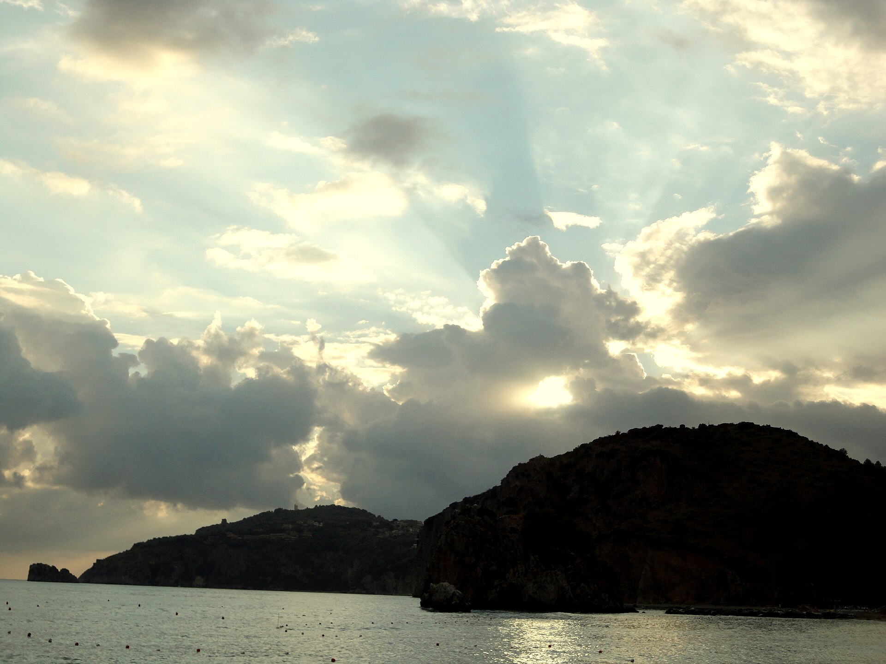

Magna Graecia · Capaccio-Paestum
Paestum, Poseidonia
Um 7 Uhr morgens, zwischen Mohn und hellem Travertin, summen die drei Tempel des 6.–5. Jh. v. Chr. nur von Zikaden. Athen, so intakt, hat sie nicht mehr.

Salerno QSR, 40′ von PaestumNationalpark, UNESCO 1998, 100 km Küste
Templi dorici che Atene non ha più, baie che si aprono solo dal mare, borghi dove Ancel Keys ha capito perché qui si vive più a lungo. Sag mir, was für ein Reisender du bist. Ich sage dir, welches Cilento deins ist.
Wähle deine Küste20 Orte, 20 Charaktere. Keine 20 gleichen Strände.
Der Cilento, den alle kennen, den fast niemand kennt, und die exotische, resilienteste Seite. Jeder mit seinem Meer, seinem Stein, seinem Rhythmus. Filter nach Lust, nicht nach Sternen.
Magna Graecia · Capaccio-Paestum
Um 7 Uhr morgens, zwischen Mohn und hellem Travertin, summen die drei Tempel des 6.–5. Jh. v. Chr. nur von Zikaden. Athen, so intakt, hat sie nicht mehr.

Wildes Meer · Centola
Natürlicher Bogen am Bug, dann Sprung im Buondormire, wo der Sand weiß knackt und der Fels nach warmem Harz riecht.

Cala dopo cala · Camerota
Von Lentiscelle bis Cala Bianca zählst du die Sarazentürme beim Schwimmen, mit dem Öl der jahrhundertealten Olivenbäume noch an den Händen vom Mittagessen.

Borgo lento · Pollica
Abends stellt den Hafen die Motoren ab und es bleibt nur das Klirren der Gläser. Hier hörte Hemingway den Fischern zu und Keys maß Langlebigkeit mit nativem Öl.

Borgo sul mare · UNESCO
Vom normannischen Schloss steigst du Richtung Punta Licosa hinab zwischen gequetschtem Myrtus, und das Tyrrhenische darunter ist flaschengrün gegen weißen Kalkstein.

Filosofia · Ascea
Geh die Porta Rosa entlang, den ersten griechischen Rundbogen, wo Parmenides an das Sein dachte. Unten, zehn Minuten entfernt, bringt dich Ascea Marina wieder ins Wasser.

Tor zum Cilento · Agropoli
Steile Steinstufen, aragonesisches Schloss gegen den Wind, und bei Trentova schmeckt das Wasser nach echtem Salz nach dem Zug von Neapel. Dies ist das Tor, keine Zwischenstation.

Binnenpark · Vallo di Diano
In Pertosa steigst du ins Boot in der Dunkelheit, die nach kaltem Fluss riecht, in Padula steigst du in 51.500 m² Barock aus: Stein, Höhlenwasser, Holzofenbrot.

Strand · Abatese-Schloss
Das ist das Castellabate, das alle kennen, und es ist nicht das Bergdorf: hier geht man hinunter zum Strand, zum Moresco, mit den Ausflugsschiffen vom Hafen. Feiner Sand, flaches Wasser, und das Schloss der Fürsten Abatese schaut auf die Bucht hinunter.

Das erste Fresko des Mittelmeers
Das lebendige Museum von Ancel Keys: kein Glaskasten, sondern das Dorf selbst, mit denselben Häusern und denselben Essgewohnheiten von 1962. Olivenöl auf dem Tisch, Fisch, Getreidebrot. Hier ist die mediterrane Diät keine Theorie: sie ist das, was du mittags isst.

Das härtere Meer · die Cardano-Höhlen
Der Punkt, wo sich der Cilento schließt und das Meer dunkel wird. Von hier fahren die Boote zur Blauen Höhle und zu Cala delle Vipere, den Höhlen des Cardano-Vorgebirges. Kälteres Wasser, echterer Grund, weniger Welt drumherum.

Das andere Feigenkap
Das Tor zum Golf von Policastro. Hier beginnt die andere Hälfte des Cilento, die weniger fotogene und echtere Hälfte: die Menaica-Sardinen, der Hafen, und hinauf ins Bussentino-Tal die Ölmühlen und die Öldörfer.
Binnenpark · Dach des Cilento
Der höchste Punkt des Cilento und Süditaliens. Jahrhundertealte Buchenwälder, Sterne, die man vom Meer sieht, zwei Seen und der Nebel, der bis zum Mittag bleibt. Man steigt nicht zum Fotografieren hinauf: man steigt wegen der Stille hinauf. CAI-Weg von Piano del Cranio, 2,5 Stunden ab Parkplatz.
Felseneinsiedler · Ascea
In den Fels gehauene Einsiedlerklöster, die es seit dem Mittelalter gibt, Wälder, die atmen. Das ist die Lunge des Cilento: sauberes Wasser, Luft, die du im Sommer nie eingeatmet hast. Fast keine Besucher. Die Petina-Höhlen erreicht man nur zu Fuß.
Lukanische Dolomiten · Basilikata
Pietrapertosa über einem erloschenen Vulkan schwebend, Castelcivita zwischen den Wänden, Pertosa, wo der Fluss im Dunkeln bei festen 16° dahinfliesst. Wasser, Kälte, Fels. Das Berg-Pendant des Cilento und der Teil, den Touristen fast immer übersehen.
Casentino · Wasser und Sprünge
Die „Kuren des Cilento": Sprünge, kleine Wasserfälle und Wasser, das kalt von der Calore-Quelle kommt. Du läufst im Wasser, natürliche Sprünge, Kastanienwälder. Keine Menschenmenge, nicht einmal im August.
Barock · UNESCO
51.500 m² Barock, einer der größten Klöster der Welt, in UNESCO. Treppen, die nicht enden, eine Bibliothek mit 140 alten Bänden, der Fischklosterhof. Der Besuch allein ist einen halben Tag wert und erklärt das Vallo di Diano besser als jeder Reiseführer.
Kühle Küste · Mündung des Sele
Wo der Sele ins Meer mündet, läuft die Küste kühl: frischeres Wasser, flache Böden, und der Strand, wo die Unechte Karettenkröte noch nistet. Eine wilde Ecke zwei Schritte von den Tempeln von Velia. Nichts ist gebaut, und genau darum geht es.
Der Cilento, der arbeitet
Man kommt nicht wegen des Strands hierher, sondern wegen der Fischerei. Werften, Sardinen, Grillen und Büffelhörner. Morra ist der Industriehafen des Cilento, Pisciotta das andere Gesicht, das um vier aufwacht. Resilienz als Wirtschaft: Das Meer ist hier keine Annehmlichkeit, es ist Arbeit.
Das Meer als Grenze
Die Cilento-Küste ist auch eine Transitroute. Bei Ispani, Roccella und Sapri beobachten die Rettungsverbände das Meer täglich, und die Küstenwache fährt die schwierigste Route im Mittelmeer. Das ist der unbequeme, aktuelle, am wenigsten erzählte Teil dieses Reiseführers: Das Meer, das wir als Schönheit beschrieben haben, war für jemanden eine Schwelle.
Kein Ort in dieser Kategorie.
Der Cilento schließt nicht im September
April–Mai: 18–22°, Mohn zwischen den Tempeln, Monte-Stella-Wege ohne Hitze. Paestum und Velia morgens fast leer. Artischocken- und Erdbeerfeste.

Juni–August: Buondormire-Bucht und Cala Bianca vor 10, Dörfer nach 21 Uhr. Boote und Tische buchen. Punta Licosa zu Fuß bei Sonnenuntergang, nicht um 13 Uhr.

September–Oktober: der beste Monat. Wasser noch 23–25°, leere Strände, Ernte und offene Ölmühlen. Teggiano und Padula mit schönen Morgennebeln.

November–März: echte Dörfer, keine Warteschlangen. Certosa di Padula, Pertosa-Höhlen (immer 16° darin), Kichererbsensuppe und Lagane. Cervati manchmal verschneit.

Was man hier wirklich tut
Palinuro und Camerota: Bootstouren im Morgengrauen, Blaue Höhle, Bluthöhle, Bad im Buondormire. Felschuhe mitbringen.
Paestum + Velia an einem Tag mit Audioguide und Museum. In Paestum richten sich die Säulen am 18.–19. August bei Sonnenuntergang aus.
Monte Cervati (1.898 m), Calore-Schluchten, Capelli-di-Venere-Wasserfälle, Castelcivita- und Pertosa-Höhlen. Zu Fuß oder mit E-Bike.
Mozzarella am selben Morgen, Menaica-Sardinen, Felitto-Fusillo, weißer Feige DOP, natives Öl. In Pioppi versteht man, warum man länger lebt.
Kopieren, einfügen, los
Echte Fahrzeiten, kein „alles an einem Tag“.
DOP, Presidien, echte Tavernen
Molkereien in Capaccio-Paestum. Innerhalb von 6 Stunden essen, noch warm.
Pisciotta, gefangen mit dem Netz, das auswählt. Slow-Food-Presidium.
Pasta auf dem Messingdraht gezogen, Bergfleischsoßen. Lagane und Kichererbsen dazu.
Oktober: offene Ölmühlen, Holzofenbrot, Oliven in neuem Öl.
Weingüter zwischen Rutino, Agropoli und San Mauro. Vulkanische Böden, wenige Abfüller.
Der Ballen 8 Monate im Holz gereift. Gefolgt von der Peperoni crusco.
Vor dem Abreisen lesen
Der Flughafen Costa d'Amalfi und Cilento liegt in Pontecagnano, 40′ von Paestum. Saisonstrecken ändern sich: prüfe auf der Website der Airline.
| Route | Status |
|---|---|
| Londra STN · Ryanair | saisonal |
| Parigi ORY · Vueling, Transavia | aktiv |
| Amsterdam · Transavia | aktiv |
| Barcellona · Vueling | aktiv |
| Madrid · Iberia | aktiv |
| Vienna · Ryanair | saisonal |
| Bruxelles CRL · Ryanair | saisonal |
| Lione · Nantes · Volotea | aktiv |
| Düsseldorf · Stoccarda · Eurowings | aktiv |
| Dubai · flydubai | aktiv |
Von QSR: Airlink-Bus zum Bahnhof Salerno 30–40′ ~5 €, dann Regional. Alternative: Neapel-Capodichino + Alibus.
Neapel–Reggio Calabria. Der Regional Neapel–Sapri (~2h45) ist die Linie, die dich dort absetzt, wo du hinmusst.
| Route | Status |
|---|---|
| AV fino a Salerno · Frecciarossa / Italo | dann Regional |
| Italo diretto ad Agropoli · da Napoli ~1h, da Roma ~2h04 | aktiv |
| InterCity Notte da Milano · arriva all'alba | aktiv |
| Vallo di Diano · kein Zug seit 1987 | nur Bus + Auto |
Live-Zeiten auf RFI-Monitor und trenitalia.com. Sicignano-Lagonegro hat nie wieder geöffnet: für den Vallo di Diano braucht es anderes.
A2 Ausfahrten Battipaglia–Eboli für Paestum und Agropoli; Atena Lucana–Sala Consilina– Padula-Buonabitacolo für das Hinterland; Schnellstraße für Policastro und Sapri.
SS18 Küstenstraße: Agropoli → Palinuro sind 55 km in ~1h20, langsam und schön. Im Sommer sind die Parkplätze vor 10 Uhr voll.
Vor Ort: Sommerbus Cilento Blu zwischen den Dörfern, gemeinsames Boot ab €25 in Palinuro/Camerota. Wir buchen nichts: Zeiten und Preise ändern sich, prüfe im Hafen, Museum, Bahnhof.